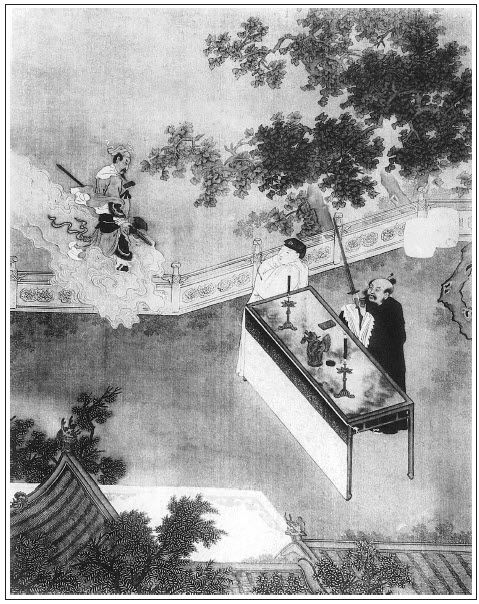

張回此回文字，最是難寫。題雖兩句，卻是一串的事。故此回乃是一筆寫去，內卻前前後後穿針遞線，一絲不苟。真是龍門一手出來，不敢曰又一龍門也。
如寫瓶兒，寫西門，寫伯爵，寫潘道士，寫吳銀兒、王姑子，寫馮媽媽，寫如意兒，寫花子由，其一時或閒筆插入，或忙筆正寫，或關切或不關切，疏略淺深，一時皆見。至於瓶兒遺囑，又是王姑子、如意、迎春、繡春、老馮、月娘、西門、嬌兒、玉樓、金蓮、雪娥，不漏一人，而淺深恩怨皆出。其諸人之親疏厚薄淺深，感觸心事，又一筆不苟，層層描出。文至此亦可雲至矣。看他偏有餘力，又接手寫其死後「西門大哭」一篇。且偏更於其本命燈絕後，預先寫其一番哭泣，不特瓶兒、西門哭，直寫至西門與月娘哭，豈不大奇？至其一死，獨寫西門一人大哭，真聲淚俱出。又寫月娘之哭，又寫眾人之哭，又接寫西門之再哭，又接寫月娘之不哭，又接寫西門之前廳哭，又寫哭了又哭，然後將「雞就叫了」一句頓住，便使一時半夜人死喧鬧，以及各人言語心事，並各人所做之事，一毫不差，歷歷如真有其事。即真事令一人提筆記之，亦不能全者，乃又曲曲折折，拉拉雜雜，無不寫之。我已為至矣盡矣，其才亦應少竭矣，乃偏又接寫請徐先生，報花子由，報諸親；又寫黑書；又寫取布搭棚，請畫師，且夾寫玳安哭，又夾寫西門再哭，月娘惱，玉樓疏，金蓮暢快；又接寫伯爵做夢，咂嘴跌腳；再接寫西門哭，伯爵勸，一篇文字方完。我亦並不知作者是神工，是鬼斧，但見其二段中，如千人萬馬，卻一步不亂。讀此一回，謂世間有一史公生在漢世，吾不信也。
西門是痛，月娘是假，玉樓是淡，金蓮是快。故西門之言，月娘便惱；西門之哭，玉樓不見；金蓮之言，西門發怒也。情事如畫。
伯爵夢簪折，西門亦夢簪折，蓋言瓶墜也。點題之妙，如此生動，誰能如此？
詩曰：
玉釵重合兩無緣，魚在深潭鶴在天。
得意紫鸞休舞鏡，傳言青鳥罷銜箋。
金盆已覆難收水，玉軫長籠不續絃。
若向䕷蕪山下過，遙將紅淚灑窮泉。

話說西門慶見李瓶兒服藥無效，求神問卜發課，皆有凶無吉，無法可處。初時，李瓶兒還𨴃䦛著梳頭洗臉，下炕來坐淨桶，次後漸漸飲食減少，形容消瘦，那消幾時，張夾又過幾時。把個花朵般人兒，瘦弱得黃葉相似，也不起炕了，只在床褥上鋪墊草紙。恐怕人嫌穢惡，教丫頭只燒著香。西門慶見他胳膊兒瘦得銀條相似，只守著在房內哭泣，衙門中隔日去走一走。李瓶兒道：「我的哥，你還往衙門中去，只怕誤了你公事。我不妨事，只吃下邊流的虧，若得止住了，再把口裡放開，吃些飲食兒，就好了。你男子漢，常絆在我房中做甚麼！」西門慶哭道：「我的姐姐，我見你不好，心中捨不的你。」李瓶兒道：「好傻子，只不死，死將來你攔的住那些！」張夾真傻。又道：「我有句話要對你說：我不知怎的，但沒人在房裡，心中只害怕，恰似影影綽綽有人在跟前一般。夜裡要便夢見他，拿刀弄杖，和我廝嚷，孩子也在他懷裡。我去奪，反被他推我一交，說他又買了房子，來纏了好幾遍，只叫我去。只不好對你說。」西門慶聽了說道：「人死如燈滅，這幾年知道他往那裡去了！此是你病的久，神虛氣弱了，那裡有甚麼邪魔魍魎、家親外祟！我如今往吳道官廟裡，討兩道符來，貼在房門上，看有邪祟沒有。」說畢，走到前邊，即差玳安騎頭口往玉皇廟討符去。走到路上，迎見應怕爵和謝希大，忙下頭口。伯爵因問：「你往那裡去？你爹在家裡？」玳安道：「爹在家裡，小的往玉皇廟討符去。」伯爵與謝希大到西門慶家，因說道：「謝子純聽見嫂子不好，諕了一跳，敬來問安。」西門慶道：「這兩日身上瘦的通不像模樣了，丟的我上不上，下不下，卻怎生樣的？」伯爵道：「哥，你使玳安往廟裡做甚麼去？」西門慶悉把李瓶兒害怕之事告訴一遍：「只恐有邪祟，教小廝討兩道符來鎮壓鎮壓。」謝希大道：「哥，此是嫂子神氣虛弱，那裡有甚麼邪祟！」伯爵道：「哥若遣邪也不難，門外五嶽觀潘道士，張夾因吳道士引出潘道士。他受的是天心五雷法，極遣的好邪，有名喚著潘捉鬼，常將符水救人。哥，你差人請他來，看看嫂子房裡有甚邪祟，他就知道。你就教他治病，他也治得。」西門慶道：「等討了吳道官符來看，在那裡住？沒奈何，你就領小廝騎了頭口，請了他來。」伯爵道：「不打緊，等我去。天可憐見嫂子好了，我就頭著地也走。」繡旁油嘴。說了一回話，張夾吉凶事無所不用其奉承者。伯爵和希大起身去了。
玳安兒討了符來，貼在房中。晚間李瓶兒還害怕，張夾足一句。對西門慶說：「死了的，他剛才和兩個人來拿我，見你進來，躲出去了。」西門慶道：「你休信邪，不妨事。昨日應二哥說，此是你虛極了。他說門外五嶽觀有個潘道士，好符水治病，又遣的好邪，我明日早教應伯爵去請他來看你，有甚邪祟，教他遣遣。」李瓶兒道：「我的哥哥，你請他早早來，那廝他剛才發恨而去，明日還來拿我哩！你快些使人請去。」西門慶道：「你若害怕，我使小廝拿轎子接了吳銀兒，和你做兩日伴兒。」李瓶兒搖頭兒說：「你不要叫他，只怕誤了他家裡勾當。」張夾月娘與桂姐不然。西門慶道：「叫老馮來伏侍你兩日兒如何？」李瓶兒點頭兒。這西門慶一面使來安，往那邊房子裡叫馮媽媽，又不在，鎖了門出去了。對一丈青說下：「等他來，好歹教他快來宅內，六娘叫他哩。」西門慶一面又差下玳安：「明日早起，你和應二爹往門外五嶽觀請潘道士去。」俱不在話下。張夾又第二日。
次日，只見王姑子挎著一盒兒粳米、二十塊大乳餅、一小盒兒十香瓜茄來看。張夾消經帳者，插入王姑子一段，一時情景如火，又借王姑消瓶兒財帳，觀瓶兒與銀囑時便知。李瓶兒見他來，連忙教迎春搊扶起來坐的。張夾怕死之情。王姑子道了問訊，李瓶兒請他坐下，道：「王師父，你自印經時去了，影邊兒通不見你。我恁不好，你就不來看我看兒？」王姑子道：「我的奶奶，我通不知你不好，昨日大娘使了大官兒到庵裡，我才曉得。又說印經哩，你不知道，我和薛姑子老淫婦合了一場好氣。與你老人家印了一場經，只替他趕了網兒。背地裡和印經的打了五兩銀子夾帳，我通沒見一個錢兒。你老人家作福，這老淫婦到明日墮阿鼻地獄！繡眉不問病，且先揭條人，自心之病發不能忍矣。為他氣的我不好了，張夾利在則然，一毫非假。把大娘的壽日都誤了，沒曾來。」李瓶兒道：「他各人作業，隨他罷，你休與他爭執了。」王姑子道：「誰和他爭執甚麼。」李瓶兒道：「大娘好不惱你哩，說你把他受生經都誤了。」張夾因印經生受卻誤了受生經，一笑。王姑子道：「我的菩薩，我雖不好，敢誤了他的經？──在家整誦了一個月，昨日圓滿了，張夾妙絕自謊。今日才來。先到後邊見了他，把我這些屈氣告訴了他一遍。我說，不知他六娘不好，沒甚麼，這盒粳米和些十香爪、幾塊乳餅，與你老人家吃粥兒。大娘才叫小玉姐領我來看你老人家。」小玉打開盒兒，李瓶兒看了說道：「多謝你費心。」王姑子道：「迎春姐，你把這乳餅就蒸兩塊兒來，我親看你娘吃些粥兒。」迎春一面收下去了。李瓶兒吩咐迎春：「擺茶來與王師父吃。」王姑子道：「我剛才後邊大娘屋裡吃了茶，煎些粥來，我看著你吃些。」
不一時，迎春安放桌兒，擺了四樣茶食，打發王姑子吃了，然後拿上李瓶兒粥來，一碟十香甜醬瓜茄、一碟蒸的黃霜霜乳餅、兩盞粳米粥，一雙小牙筷。迎春拿著，奶子如意兒在旁拿著甌兒，餵了半日，只呷了兩三口粥兒，咬了一些乳餅兒，就搖頭兒不吃了，教：「拿過去罷。」王姑子道：「人以水食為命，恁煎的好粥兒，你再吃些兒不是？」李瓶兒道：「也得我吃得下去是！」迎春便把喫茶的桌兒掇過去。王姑子揭開被，看李瓶兒身上，肌體都瘦的沒了，諕了一跳，說道：「我的奶奶，我去時你好些了，如何又不好了，就瘦的恁樣的了？」如意兒道：「可知好了哩！娘原是氣惱上起的病，張夾知心者方能又接續香火。爹請了太醫來看，每日服藥，已是好到七八分了。只因八月內，哥兒著了驚諕不好，娘晝夜憂戚，那樣勞碌，連睡也不得睡，實指望哥兒好了，不想沒了。成日哭泣，又著了那暗氣，暗惱在心裡，就是鐵石人也禁不的，怎的不把病又發了！是人家有些氣惱兒，對人前分解分解也還好，娘又不出語，著緊問還不說哩。」繡眉瓶兒受累處，只是一味要做好人，所謂不怒人，必自忍也。張夾借如意兒說出。王姑子道：「那討氣來？你爹又疼他，你大娘又敬他，左右是五六位娘，端的誰氣著他？」奶子道：「王爺，你不知道──」因使繡春外邊瞧瞧，繡旁畫。看關著門不曾，張夾早為如意起花樣，以便下文守靈時生色。一路非寫瓶兒也。「──俺娘都因為著了那邊五娘一口氣。──他那邊貓撾了哥兒手，生生的諕出風來。爹來家，那等問著，娘只是不說。落後大娘說了，才把那貓來摔殺了。他還不承認，拿我每煞氣。八月裡，哥兒死了，他每日那邊指桑樹罵槐樹，百般稱快。張夾又補出。俺娘這屋裡分明聽見，有個不惱的！左右背地裡氣，只是出眼淚。因此這樣暗氣暗惱，才致了這一場病。──天知道罷了！娘可是好性兒，好也在心裡，歹也在心裡，姊妹之間，自來沒有個面紅面赤。有件稱心的衣裳，不等的別人有了，他還不穿出來。張夾補得傷心，亦是自尋苦吃，若仍做花二娘，誰人管伊也。這一家子，那個不叨貼娘些兒？可是說的，饒叨貼了娘的，還背地不道是。」繡眉如意嘴不饒人，此其一斑，己伏與金蓮合氣張本。張夾人情可恨在此。王姑子道：「怎的不道是？」如意兒道：「像五娘那邊潘姥姥，來一遭，遇著爹在那邊歇，就過來這屋裡和娘做伴兒。臨去，娘與他鞋面、衣服、銀子，甚麼不與他？五娘還不道是。」張夾索性令如意暢言之，又為摳打安根。李瓶兒聽見，便嗔如意兒：「你這老婆，平白只顧說他怎的？我已是死去的人了，隨他罷了。天不言而自高，地不言而自厚。」繡眉以瓶兒之為人而罹夭折，使不見子虛一段，吾必謂無非無儀之賢婦人，而且咎天遣之不平矣，而孰知其不然，可輕許人而妄論天道哉！張夾金蓮不及瓶兒在此。王姑子道：「我的佛爺，誰如你老人家這等好心！天也有眼，望下看著哩。你老人家往後來還有好處。」李瓶兒道：「王師父，還有甚麼好處！一個孩兒也存不住，去了。我如今又不得命，身底下弄這等疾，就是做鬼，走一步也不得個伶俐。張夾鬼又如何一步步走，走又如何是伶俐，輪迴幻海確有此想。我心裡還要與王師父些銀子兒，望你到明日我死了，你替我在家請幾位師父，多誦些《血盆經》，懺懺我這罪業。」王姑子道：「我的菩薩，你老人家忒多慮了。你好心人，龍天自然加護。」正說著，只見琴童兒進來對迎春說：「爹吩咐把房內收拾收拾，花大舅便進來看娘，在前邊坐著哩。」王姑子便起身說道：「我且往後邊去走走。」李瓶兒道：「王師父，你休要去了，與我做兩日伴兒，我還和你說話哩。」張夾總是怕死，故獨親王尼。王姑子道：「我的奶奶，我不去。」
不一時，西門慶陪花大舅進來看問，見李瓶兒睡在炕上不言語，花子由道：「我不知道，昨日聽見這邊大官兒去說，才曉的。明日你嫂子來看你。」張夾竟是李子由、花瓶兒矣。那李瓶兒只說了一聲：「多有起動。」繡旁冷得妙。就把面朝裡去了。張夾往事不堪回首，深悲孽鏡高懸也。花子由坐了一回，起身到前邊，向西門慶說道：「俺過世老公公在廣南鎮守，帶的那三七藥，曾吃了不曾？不拘婦女甚崩漏之疾，用酒調五分末兒，吃下去即止。大姐他手裡曾收下此藥，何不服之？」西門慶道：「這藥也吃過了。昨日本縣胡大尹來拜，我因說起此疾，他也說了個方兒：棕炭與白雞冠花煎酒服之。只止了一日，到第二日，流的比常更多了。」花子由道：「這個就難為了。姐夫，你早替他看下副板兒，預備他罷。明日教他嫂子來看他。」說畢，起身去了。
奶子與迎春正與李瓶兒墊草紙在身底下，只見馮媽媽來到，張夾插入老馮，消瓶兒色字。觀後囑老馮「莫不就攆你」可知，與李夫人不肯回臉之意同悲也。向前道了萬福。如意兒道：「馮媽媽貴人，怎的不來看看娘？昨日爹使來安兒叫你去，說你鎖著門，往那裡去來？」馮婆子道：「說不得我這苦。成日往廟裡修法，早晨出去了，是也直到黑，不是也直到黑來家，偏有那些張和尚、李和尚、王和尚。」繡眉寫不關心人皮嘴舌如畫。如意兒道：「你老人家怎的有這些和尚？早時沒王師父在這裡？」那李瓶兒聽了，微笑了一笑兒，說道：「這媽媽子，單管只撒風。」張夾此後風真撒矣。如意兒道：「馮媽媽，叫著你還不來！娘這幾日，粥兒也不吃，只是心內不耐煩，你剛才來到，就引的娘笑了一笑兒。你老人家伏侍娘兩日，管情娘這病就好了。」馮媽媽道：「我是你娘退災的博士！」又笑了一回。因向被窩裡摸了摸他身上，說道：「我的娘，你好些兒也罷了！」又問：「坐榪子還下的來？」迎春道：「下的來倒好！前兩遭，娘還𨴃䦛，俺每搊扶著下來。這兩日通只在炕上鋪墊草紙，一日兩三遍。」
正說著，只見西門慶進來，看見馮媽媽，說道：「老馮，你也常來這邊走走，怎的去了就不來？」婆子道：「我的爺，我怎不來？這兩日醃菜的時候，掙兩個錢兒，醃些菜在屋裡，遇著人家領來的業障，好與他吃。不然，我那討閒錢買菜來與他吃？」繡眉老馮此時且只講自家心事，所謂下愚不及情。張夾忙中偏有閒筆。西門慶道：「你不對我說，昨日俺莊子上起菜，撥兩三畦與你也夠了。」婆子道：「又敢纏你老人家。」說畢，過那邊屋裡去了。
西門慶便坐在炕沿上，迎春在旁熏爇芸香。西門慶便問：「你今日心裡覺怎樣？」又問迎春：「你娘早晨吃些粥兒不曾？」迎春道：「吃的倒好！王師父送了乳餅，蒸來，娘只咬了一些兒，呷了不上兩口粥湯，就丟下了。」西門慶道：「應二哥剛才和小廝門外請那潘道士，又不在了。明日我教來保再請去。」李瓶兒道：「你上緊著人請去，那廝，但合上眼，只在我跟前纏。」西門慶道：「此是你神弱了，只把心放正著，休要疑影他。請他來替你把這邪崇遣遣，再服他些藥，管情你就好了。」李瓶兒道：「我的哥哥，奴已是得了這個拙病，那裡好甚麼！奴指望在你身邊團圓幾年，也是做夫妻一場，誰知到今二十七歲，先把冤家死了，奴又沒造化，這般不得命，拋閃了你去。若得再和你相逢，只除非在鬼門關上罷了。」說著，一把拉著西門慶手，兩眼落淚，哽哽咽咽，再哭不出聲來。張夾所為孽也。那西門慶又悲慟不勝，哭道：「我的姐姐，你有甚話，只顧說。」兩個正在屋裡哭，忽見琴童兒進來，說：「答應的稟爹，明日十五，衙門裡拜牌，畫公座，大發放，爹去不去？班頭好伺候。」西門慶道：「我明日不得去，拿帖兒回了夏老爹，自己拜了牌罷。」琴童應諾去了。李瓶兒道：「我的哥哥，你依我還往衙門去，休要誤了公事。我知道幾時死，還早哩！」西門慶道：「我在家守你兩日兒，其心安忍！你把心來放開，不要只管多慮了。剛才花大舅和我說，教我早與你看下副壽木，衝你沖，管情你就好了。」李瓶兒點頭兒，便道：「也罷，你休要信著人使那憨錢，將就使十來兩銀子，買副熟料材兒，把我埋在先頭大娘墳旁，只休把我燒化了，就是夫妻之情。早晚我就搶些漿水，也方便些。張夾慘景。你偌多人口，往後還要過日子哩！」繡眉語語恐其過情，又心心慮其不及情。臨危人一段身死無主，不敢以夙昔自信心腸，真足使人痛哭。西門慶不聽便罷，聽了如刀剜肝膽、劍銼身心相似。哭道：「我的姐姐，你說的是那裡話！我西門慶就窮死了，也不肯虧負了你！」張夾一番西門慶死別，卻先寫一段生離。正說著，只見月娘親自拿著一小盒兒鮮蘋菠進來，說道：「李大姐，他大妗子那裡送蘋菠兒來你吃。」因令迎春：「你洗淨了，拿刀兒切塊來你娘吃。」李瓶兒道：「又多謝他大妗子掛心。」張夾並大妗子亦不可漏，其筆力為何如！不一時，迎春旋去皮兒，切了，用甌兒盛貯，拈了一塊，與他放在口內，只嚼了些味兒，還吐出來了。月娘恐怕勞碌他，安頓他面朝裡就睡了。
西門慶與月娘都出外邊商議。月娘道：「李大姐，我看他有些沉重，你須早早與他看一副材板兒，省得到臨時馬捉老鼠，又亂不出好板來。」西門慶道：「今日花大哥也是這般說。適才我略與他題了題兒，他吩咐：『休要使多了錢，將就抬副熟板兒罷。你偌多人口，往後還要過日子。』倒把我傷心了這一會。我說亦發等請潘道士來看了，看板去罷。」繡旁寫出癡心。月娘道：「你看沒分曉，一個人形也脫了，關口都鎖住，勺水也不進，還指望好！咱一壁打鼓，一壁磨旗。幸的他好了，把棺材就捨與人，也不值甚麼。」西門慶道：「既是恁說……」就出到廳上，叫將賁四來，問他：「誰家有好材板，你和姐夫兩個拿銀子看一副來。」賁四道：「大街上陳千戶家，新到了幾副好板。」西門慶道：「既有好板，」即令陳敬濟：「你後邊問你娘要五錠大銀子來，你兩個看去。」那陳敬濟忙進去取了五錠元寶出來，同賁四去了。
直到後晌才來回話，說：「到陳千戶家看了幾副板，都中等，又價錢不合。回來路上，撞見喬親家爹，說尚舉人家有一副好板──原是尚舉人父親在四川成都府做推官時，帶來預備他老夫人的兩副桃花洞，他使了一副，只剩下這一副──牆磕、底蓋、堵頭俱全，共大小五塊，定要三百七十兩銀子。喬親家爹同俺每過去看了，板是無比的好板。喬親家與做舉人的講了半日，只退了五十兩銀子。不是明年上京會試用這幾兩銀子，他也還捨不得賣哩。」西門慶道：「既是你喬親家爹主張，兌三百二十兩抬了來罷，休要只顧搖鈴打鼓的。」陳敬濟道：「他那裡收了咱二百五十兩，還找與他七十兩銀子就是了。」一面問月娘又要出七十兩銀子，二人去了。
比及黃昏時分，只見幾個閒漢，用大紅氈條裹著，抬板進門，放在前廳天井內。打開，西門慶觀看，果然好板。隨即叫匠人來鋸開，裡面噴香。每塊五寸厚，二尺五寸寬，七尺五寸長。看了滿心歡喜。張夾此等歡喜奇絕。又旋尋了伯爵到來看，因說：「這板也看得過了。」伯爵喝采不已，說道，「原說是姻緣板，大抵一物必有一主。嫂子嫁哥一場，今日情受這副材板夠了。」張夾此犀帶何如？不意俱勞謬獎。吩咐匠人：「你用心只要做的好，你老爹賞你五兩銀子。」匠人道：「小人知道。」一面在前廳七手八腳，連夜攢造。伯爵囑來保：「明日早五更去請潘道士，他若來，就同他一答兒來，不可遲滯。」說畢，陪西門慶在前廳看著做材，到一更時分才家去。西門慶道：「明日早些來，只怕潘道士來的早。」伯爵道：「我知道。」作辭出門去了。張夾一路寫伯爵還夾在其中，倉皇忙亂逼真，幫閒骨相俱出。
卻說老馮與王姑子，晚夕都在李瓶兒屋裡相伴。只見西門慶前邊散了，進來看視，要在屋裡睡。李瓶兒不肯，說道：「沒的這屋裡齷齷齪齪的，他每都在這裡，不方便，你往別處睡去罷。」西門慶又見王姑子都在這裡，遂過那邊金蓮房裡去了。
李瓶兒教迎春把角門關了，上了拴，教迎春點著燈，打開箱子，取出幾件衣服、銀首飾來，放在旁邊。先叫過王姑子來，與了他五兩一錠銀子、一疋綢子：「等我死後，你好歹請幾位師父，與我誦《血盆經懺》。」王姑子道：「我的奶奶，你忒多慮了。天可憐見，你只怕好了。」李瓶兒道：「你只收著，不要對大娘說我與你銀子，張夾一句直照牆頭寄物，深深埋恨，此日方吐一字。蓋前此寄放之物，月娘有矣，今後瓶兒之物，瓶兒豈不自知亦必為月娘乎！既必為月娘有，則此日之物，雖暫為瓶兒一日之有，即無非月娘之物。異日皮襖尚能動玉姐之酸，況瓶兒自己之柔腸乎！故知與王姑五兩，即算取月娘五兩與之，不令其知，真大痛也。只說我與了你這疋綢子做經錢。」王姑子道，「我知道。」於是把銀子和綢子收了。張夾先囑王姑子，總是怕死。又喚過馮媽媽來，向枕頭邊也拿過四兩銀子、一件白綾襖、黃綾裙、一根銀掠兒，遞與他，說道：「老馮，你是個舊人，我從小兒，你跟我到如今。張夾屏殘風令矣，千古傷心。我如今死了去，也沒甚麼，這一套衣服並這件首飾兒，與你做一念兒。這銀子你收著，到明日做個棺材本兒。你放心，那邊房子，等我對你爹說，你只顧住著，只當替他看房兒，他莫不就攆你不成！」繡旁語淺悲深。繡眉一言一默，一舉一動，真有餘悲，不獨在詞也張夾不知王六兒一處接手也，又瓶兒以色事西門者也。一旦身死。諸色皆空，故自亦不敢信西門之情不棄，其囑老馮一語，真九迴腸，一聲「何滿子」也。馮媽媽一手接了銀子和衣服，倒身下拜，哭著說道：「老身沒造化了。有你老人家在一日，與老身做一日主兒。你老人家若有些好歹，那裡歸著？」繡旁王六兒家去。張夾二段老馮。李瓶兒又叫過奶子如意兒，與了他一襲紫綢子襖兒、藍綢裙、一件舊綾披襖兒、兩根金頭簪子、一件銀滿冠兒，說道：「也是你奶哥兒一場。哥兒死了，我原說的，教你休撅上奶去，實指望我在一日，佔用你一日，不想我又死去了。我還對你爹和你大娘說，到明日我死了，你大娘生了哥兒，就教接你的奶兒罷。這些衣服，與你做一念兒，你休要抱怨。」張夾傷心語。那奶子跪在地下，磕著頭哭道：「小媳婦實指望伏侍娘到頭，娘自來沒曾大氣兒呵著小媳婦。還是小媳婦沒造化，哥兒死了，娘又病的這般不得命。好歹對大娘說，小媳婦男子漢又沒了，死活只在爹娘這裡答應了，出去投奔那裡？」張夾直吐深心，後文俱見。說畢，接了衣服首飾，磕了頭起來，立在旁邊，只顧揩眼淚。繡旁畫出傷心。張夾一段如意兒。李瓶兒一面叫過迎春、繡春來跪下，囑咐道：「你兩個，也是你從小兒在我手裡答應一場，我今死去，也顧不得你每了。你每衣服都是有的，不消與你了。我每人與你這兩對金裹頭簪兒、兩枝金花兒做一念兒。大丫頭迎春，已是他爹收用過的，出不去了，我教與你大娘房裡拘管。這小丫頭繡春，我教你大娘尋家兒人家，你出身去罷。省的觀眉說眼，在這屋裡教人罵沒主子的奴才。我死了，就見出樣兒來了。你伏侍別人，還像在我手裡那等撤嬌撒癡，好也罷，歹也罷了，誰人容的你？」那繡春跪在地下哭道：「我娘，我就死也不出這個門。」張夾癡情確切如此。李瓶兒道：「你看傻丫頭，我死了，你在這屋裡伏侍誰？」繡春道：「我守著娘的靈。」李瓶兒道：「就是我的靈，供養不久，也有個燒的日子，你少不的也還出去。」繡春道：「我和迎春都答應大娘。」李瓶兒道：「這個也罷了。」這繡春還不知甚麼，那迎春聽見李瓶兒囑咐他，接了首飾，一面哭的言語都說不出來。繡眉韓愈《祭十二郎文》曰，「汝時尚小，不知其言之悲。」千古同一傷心。張夾一段迎春、繡春。正是：
流淚眼觀流淚眼，斷腸人送斷腸人。
當夜，李瓶兒都把各人囑咐了。到天明，西門慶走進房來。李瓶兒問：「買了我的棺材來了沒有？」西門慶道：「昨日就抬了板來，在前邊做哩。──且沖衝你，你若好了，情願捨與人罷。」李瓶兒因問：「是多少銀子買的？休要使那枉錢。」西門慶道：「沒多，只百十兩來銀子。」李瓶兒道：「也還多了。預備下，與我放著。」西門慶說了回出來，前邊看著做材去了。吳月娘和李嬌兒先進房來，看見他十分沉重，便問道：「李大姐，你心裡卻怎樣的？」李瓶兒揝著月娘手哭道：「大娘，我好不成了。」繡眉語語是托孤囑遺，卻又語語是貪生戀世，酸酸楚楚，不忍多讀。月娘亦哭道：「李大姐，你有甚麼話兒，二娘也在這裡，你和俺兩個說。」李瓶兒道：「奴有甚話兒──奴與娘做姊妹這幾年，又沒曾虧了我，實承望和娘相守到白頭，不想我的命苦，先把個冤家沒了，如今不幸，我又得了這個拙病死去了。我死之後，房裡這兩個丫頭無人收拘。那大丫頭已是他爹收用過的，教他往娘房裡伏侍娘。小丫頭，娘若要使喚，留下；不然，尋個單夫獨妻，與小人家做媳婦兒去罷，省得教人罵沒主子的奴才。也是他伏侍奴一場，奴就死，口眼也閉。奶子如意兒，再三不肯出去，大娘也看奴分上，也是他奶孩兒一場，明日娘生下哥兒，就教接他奶兒罷。」張夾一段月娘。月娘說道：「李大姐，你放寬心，都在俺兩個身上。說凶得吉，若有些山高水低，迎春教他伏侍我，繡春教他伏侍二娘罷。如今二娘房裡丫頭不老實做活，早晚要打發出去，教繡春伏侍他罷。奶子如意兒，既是你說他沒投奔，咱家那裡佔用不下他來？就是我有孩子沒孩子，到明日配上個小廝，與他做房家人媳婦也罷了。」李嬌兒在旁便道：「李大姐，你休只要顧慮，一切事都在俺兩個身上。張夾一段嬌兒，卻是嬌兒自言。繡春到明日過了你的事，我收拾房內伏侍我，等我抬舉他就是了。」李瓶兒一面叫奶子和兩個丫頭過來，與二人磕頭。那月娘由不得眼淚出。
不一時，孟玉樓、潘金蓮、孫雪娥都進來看他，李瓶兒都留了幾句姊妹仁義之言。繡旁淡得妙。張夾一段玉樓、金蓮、雪娥，玉樓亦在二人之列，真錯認玉樓，然玉樓與瓶兒莫逆，亦非所為，玉樓深淺得宜，總是玉樓深心，非淺人可測。落後待的李嬌兒、玉樓、金蓮眾人都出去了，獨月娘在屋裡守著他，李瓶兒悄悄向月娘哭泣道：「娘到明日好生看養著，與他爹做個根蒂兒，休要似奴粗心，吃人暗算了。」繡眉金蓮毀瓶兒千萬言，不如瓶兒此一言之毒。豈可欺不言人之無口哉！張夾又囑月娘，寫是一時眾人恩怨深淺都出，月娘獨用兩番囑咐。月娘道：「姐姐，我知道。」看官聽說：只這一句話，就感觸月娘的心來。後次西門慶死了，金蓮就在家中住不牢者，就是想著李瓶兒臨終這句話。正是：
惟有感恩並積恨，千年萬載不生塵。
正說話間，只見琴童吩咐房中收拾焚下香，五嶽觀請了潘法官來了。月娘一面看著，教丫頭收拾房中乾淨，張夾是瓶兒房中。伺候淨茶淨水，焚下百合真香。月娘與眾婦女都藏在那邊床屋裡聽觀。張夾細。不一時，只見西門慶領了那潘道士進來。怎生形相？但見：
頭戴雲霞五嶽冠，身穿皂布短褐袍，腰繫雜色彩絲絛，背插橫紋古銅劍。兩隻腳穿雙耳麻鞋，手執五明降鬼扇。八字眉，兩個杏子眼；四方口，一道落腮鬍。威儀凜凜，相貌堂堂。若非霞外雲遊客，定是蓬萊玉府人。
潘道士進入角門，剛轉過影壁，將走到李瓶兒房穿廊台基下，那道士往後退訖兩步，似有呵叱之狀，爾語數四，張夾影。方才左右揭簾進入房中，向病榻而至。運雙晴，拿力以慧通神目一視，仗劍手內，掐指步罡，唸唸有辭，早知其意。繡眉有手段人，舉止自異。張夾知有鬼也。走出明間，朝外設下香案。西門慶焚了香，這潘道士焚符，喝道：「值日神將，不來等甚？」噀了一口法水去，忽階下捲起一陣狂風，彷彿似有神將現於面前一般。張夾寫得人心如見，卻不是牛鬼蛇神。潘道士便道：「西門氏門中，有李氏陰人不安，投告於我案下。汝即與我拘當坊土地、本家六神查考，有何邪祟，即與我擒來，毋得遲滯！」良久，只見潘道士瞑目變神，端坐於位上，據案擊令牌，恰似問事之狀，繡旁畫。良久乃止。張夾證明子虛化官哥公案，在此一問。出來，西門慶讓至前邊卷棚內，問其所以，潘道士便說：「此位娘子，惜乎為宿世冤愆訴於陰曹，非邪祟也，不可擒之。」張夾明說死孽。西門慶道：「法官可解禳得麼？」潘道士道：「冤家債主，須得本人，雖陰官亦不能強。」繡眉已明明說破，有良心者當毛骨悚然，而西門慶毫不知警，豈歲月久而忘其事耶！抑蔽於情而溺於愛耶！俱非也。蓋元不以此事為虧心耳！張夾天理當然。因見西門慶禮貌虔切，便問：「娘於年命若干？」西門慶道：「屬羊的，二十七歲。」潘道士道：「也罷，等我與他祭祭本命星壇，看他命燈如何。」張夾便是後天，成何益哉！西門慶問：「幾時祭？用何香紙祭物？」潘道士道：「就是今晚三更正子時，用白灰界畫，建立燈壇，張夾灰壇。以黃絹圍之，張夾絹圍。鎮以生辰壇鬥，張夾壇鬥。祭以五穀棗湯，張夾祭物。不用酒脯，只用本命燈二十七盞，張夾燈。上浮以華蓋之儀，張夾華蓋。餘無他物，官人可齋戒青衣，壇內俯伏行禮，貧道祭之，雞犬皆關去，不可入來打攪。」西門慶聽了，忙吩咐一一備辦停當。就不敢進去，只在書房中沐浴齋戒，換了淨衣。留應伯爵也不家去了，張夾細。陪潘道士吃齋饌。
到三更天氣，建立燈壇完備，潘道士高坐在上。下面就是燈壇，按青龍、白虎、朱雀、玄武，上建三台華蓋；張夾上。周列十二宮辰，張夾周圍。下首才是本命燈，張夾下。共合二十七盞。先宣念了投詞。西門慶穿青衣俯伏階下，左右盡皆屏去，不許一人在左右。燈燭熒煌，一齊點將起來。那潘道士在法座上披下發來，仗劍，口中唸唸有詞。望天罡，取真氣，布步玦，躡瑤壇。
正是：
三信焚香三界合，一聲令下一聲雷。
但見晴天月明星燦，忽然地黑天昏，起一陣怪風。
正是：
非干虎嘯，豈是龍吟？彷彿入戶穿簾，定是催花落葉。推雲出岫，送雨歸川。雁迷失伴作哀鳴，鷗鷺驚群尋樹杪。姮娥急把蟾宮閉，列子空中叫救人。
大風所過三次，忽一陣冷氣來，張夾是獅子街房子內病中結成者，是喬皇親花園內投胎者。把李瓶兒二十七盞本命燈盡皆刮滅。潘道士明明在法座上見一個白衣人張夾子虛別來無恙。領著兩個青衣人，從外進來，手裡持著一紙文書，呈在法案下。潘道士觀看，卻是地府勾批，上面有三顆印信，諕的慌忙下法座來，向前喚起西門慶來，如此這般，說道：「官人請起來罷！娘子已是獲罪於天，無所禱也！張夾二句乃普淨座前定案。本命燈已滅，豈可復救乎？只在旦夕之間而已。」那西門慶聽了，低首無語，張夾作孽人盡頭語。滿眼落淚，哀告道：「萬望法師搭救則個！」繡旁癡心。潘道士道：「定數難逃，不能搭救了。」就要告辭。西門慶再三款留：「等天明早行罷！」潘道士道：「出家人草行露宿，山棲廟止，自然之道。」西門慶不復強之。因令左右取出布一疋、白金三兩作經襯錢。潘道士道：「貧道奉行皇天至道，對天盟誓，不敢貪受世財，取罪不便。」推讓再四，只令小童收了布疋，作道袍穿，就作辭而行。張夾吳神仙收布，梵僧收布，道士今亦收布，所云佈施，即無不收乎！一笑。囑咐西門慶：「今晚，官人切忌不可往病人房裡去，恐禍及汝身。慎之！慎之！」張夾得度即渡。言畢，送出大門，拂袖而去。張夾發脫道士，庶筆墨乾淨。
西門慶歸到卷棚內，看著收拾燈壇。見沒救星，心中甚慟，向伯爵，不覺眼淚出。張夾向伯爵落淚，奇絕。伯爵道：「此乃各人稟的壽數，到此地位，強求不得。哥也少要煩惱。」因打四更時分，張夾四更時分。說道：「哥，你也辛苦了，安歇安歇罷。我且家去，明日再來。」西門慶道：「教小廝拿燈籠送你去。」即令來安取了燈送伯爵出去，關上門進來。
那西門慶獨自一個坐在書房內，掌著一枝蠟燭，心中哀慟，口裡只長吁氣，尋思道：「法官教我休往房裡去，我怎生忍得！寧可我死了也罷。張夾又渡下文。須廝守著和他說句話兒。」繡眉臨死生禍福之際，情生情滅，初意轉念，脈脈可想，思之欲哭。於是進入房中。見李瓶兒面朝裡睡，聽見西門慶進來，翻過身來便道：「我的哥哥，張夾一個我的哥哥。你怎的就不進來了？」繡旁情對處，不差一針，差一針，便見矣。因問：「那道士點得燈怎麼說？」西門慶道：「你放心，燈上不妨事。」李瓶兒道：「我的哥哥，張夾兩個我的哥哥。你還哄我哩，剛才那廝領著兩個人又來，在我跟前鬧了一回，說道：『你請法師來遣我，我已告准在陰司，決不容你！』發恨而去，明日便來拿我也。」西門慶聽了，兩淚交流，繡旁此時方信。放聲大哭道：「我的姐姐，你把心來放正著，休要理他。我實指望和你相伴幾日，誰知你又拋閃了我去了。寧教我西門慶口眼閉了，倒也沒這等割肚牽腸。」那李瓶兒雙手摟抱著西門慶脖子，嗚嗚咽咽悲哭，半日哭不出聲。張夾瓶兒先哭，妙。說道：「我的哥哥，張夾三個我的哥哥。奴承望和你白頭相守，誰知奴今日死去也。趁奴不閉眼，我和你說幾句話兒：你家事大，孤身無靠，又沒幫手，凡事斟酌，休要一衝性兒。大娘等，你也少要虧了他。繡旁不滿金蓮之詞。他身上不方便，早晚替你生下個根絆兒，庶不散了你家事。你又居著個官，今後也少要往那裡去吃酒，早些兒來家，你家事要緊。比不的有奴在，還早晚勸你。奴若死了，誰肯苦口說你？」繡眉生者方痛死者不已，而死者又殷殷以生者為念，一段彌留眷念情態，摹寫殆盡。西門慶聽了，如刀剜心肝相似，哭道：「我的姐姐，張夾一個我的姐姐與上文我的哥哥對針。你所言我知道，你休掛慮我了。我西門慶那世裡絕緣短幸，張夾四字下得斟酌。今世裡與你做夫妻不到頭。疼殺我也！天殺我也！」張夾一來回小哭。李瓶兒又吩咐迎春、繡春之事：「奴已和他大娘說來，到明日我死，把迎春伏侍他大娘；那小丫頭，他二娘已承攬。──他房內無人，便教伏侍二娘罷。」西門慶道：「我的姐姐，張夾兩個我的姐姐。你沒的說，你死了，誰人敢分散你丫頭！奶子也不打發他出去，都教他守你的靈。」李瓶兒道：「甚麼靈！回個神主子，過五七燒了罷了。」西門慶道：「我的姐姐，張夾三個我的姐姐。你不要管他，有我西門慶在一日，供養你一日。」兩個說話之間，李瓶兒催促道：「你睡去罷，這咱晚了。」張夾不然，幾乎忘卻是四更說話。西門慶道：「我不睡了，在這屋裡守你守兒。」李瓶兒道：「我死還早哩，這屋裡穢污，熏的你慌，他每伏侍我不方便。」
西門慶不得已，吩咐丫頭：「仔細看守你娘。」往後邊上房裡，對月娘悉把祭燈不濟之事告訴一遍：「剛才我到他房中，我觀他說話兒還伶俐。天可憐，只怕還熬出來也不見得。」繡旁癡心語。張夾穎上三毫，如燈取影。月娘道：「眼眶兒也塌了，嘴唇兒也干了，耳輪兒也焦了，還好甚麼！也只在早晚間了。他這個病是恁伶俐，臨斷氣還說話兒。」張夾穎上三毫，如燈取影。西門慶道：「他來了咱家這幾年，大大小小，沒曾惹了一個人，且是又好個性格兒，繡旁金蓮正反此。繡眉金蓮愛減瓶兒處，明明道破。又不出語，你教我捨的他那些兒！」題起來又哭了。張夾又一番小哭。月娘亦止不住落淚。
不說西門慶與月娘說話，張夾寫至月娘與西門同哭泣，豈不大奇。且說李瓶兒喚迎春、奶子：「你扶我面朝裡略倒倒兒。」因問道：「有多咱時分了？」奶子道：「雞還未叫，有四更天了。」張夾仍是四更。叫迎春替他鋪墊了身底下草紙，搊他朝裡，蓋被停當，睡了。眾人都熬了一夜沒曾睡，老馮與王姑子都已先睡了。迎春與繡春在面前地坪上搭著鋪，剛睡倒沒半個時辰，正在睡思昏沉之際，夢見李瓶兒下炕來，推了迎春一推，囑咐：「你每看家，我去也。」張夾癡景杳杳冥冥。忽然驚醒，見桌上燈尚未滅。忙向床上視之，還面朝裡，摸了摸，口內已無氣矣。不知多咱時分嗚呼哀哉，斷氣身亡。可憐一個美色佳人，都化作一場春夢。正是：
閻王教你三更死，怎敢留人到五更！
迎春慌忙推醒眾人，點燈來照，果然沒了氣兒，身底下流血一窪，慌了手腳，忙走去後邊，報知西門慶。西門慶聽見李瓶兒死了，和吳月娘兩步做一步奔到前邊，揭起被，但見面容不改，體尚微溫，悠然而逝，身上止著一件紅綾抹胸兒。西門慶也不顧甚麼身底下血漬，張夾細。兩隻手捧著他香腮親著，口口聲聲只叫：「我的沒救的姐姐，有仁義好性兒的姐姐！你怎的閃了我去了？寧可教我西門慶死了罷。我也不久活於世了，平白活著做甚麼！」在房裡離地跳的有三尺高，大放聲號哭。張夾寫得出，方是一來回大哭。吳月娘亦搵淚哭涕不止。張夾下語深淺自見。落後，李嬌兒、孟玉樓、潘金蓮、孫雪娥、閤家大小丫頭養娘都哭起來，哀聲動地。張夾連著寫來，妙絕。月娘向眾人道：「不知多咱死的，恰好衣服兒也不曾穿一件在身上。」玉樓道：「我摸他身上還溫溫兒的，也才去了不多回兒。咱趁熱腳兒不替他穿上衣裳，還等甚麼？」月娘見西門慶磕伏在他身上，撾臉兒那等哭，只叫：「天殺了我西門慶了！姐姐你在我家三年光景，一日好日子沒過，繡旁「有淚未出土，旁人那得知」，知此之謂也。都是我坑陷了你了！」繡眉此一哭，直想到初進門逼打瓶兒上吊時，非泛然語也，細甚。冷甚。張夾一語直照入門時。月娘聽了，心中就有些不耐煩了，說道：「你看韶刀！哭兩聲兒，丟開手罷了。一個死人身上，也沒個忌諱，就臉撾著臉兒哭，倘或口裡惡氣撲著你是的！他沒過好日子，誰過好日子來？繡眉不平則鳴，月娘且然，何況金蓮？張夾月娘心事，亦在其入門時，故一觸即動也。各人壽數到了，誰留的住他！那個不打這條路兒來？」因令李嬌兒、孟玉樓：「你兩個拿鑰匙，那邊屋裡尋他幾件衣服出來，咱每眼看著與他穿上。」又叫：「六姐，咱兩個把這頭來替他整理整理。」西門慶又向月娘說：「多尋出兩套他心愛的好衣服，與他穿了去。」月娘吩咐李嬌兒、玉樓：「你尋他新裁的大紅緞遍地錦襖兒、柳黃遍地錦裙，並他今年喬親家去那套丁香色雲綢妝花衫、翠藍寬拖子裙，並新做的白綾襖、黃綢子裙出來罷。」
當下迎春拿著燈，孟玉樓拿鑰匙，走到那邊屋裡，開了箱子，尋了半日，尋出三套衣裳來，又尋出一件襯身紫綾小襖兒、繡旁伏。張夾早為入夢作因。一件白綢子裙、一件大紅小衣兒並白綾女襪兒、妝花膝褲腿兒。李嬌兒抱過這邊屋裡與月娘瞧。月娘正與金蓮燈下替他整理頭髻，用四根金簪兒綰一方大鴉青手帕，旋勒停當。李嬌兒因問：「尋雙甚麼顏色鞋，與他穿了去？」潘金蓮道：「姐姐，他心愛穿那雙大紅遍地金高底鞋兒，張夾此處「心愛」二字，冷盡人心。只穿了沒多兩遭兒，倒尋出來與他穿去罷。」吳月娘道：「不好，倒沒的穿到陰司裡，教他跳火坑。張夾映月娘好佛。你把前日往他嫂子家去穿的那雙紫羅遍地金高底鞋，與他裝綁了去罷。」李嬌兒聽了，忙叫迎春尋出來。眾人七手八腳，都裝綁停當。
西門慶率領眾小廝，在大廳上收卷書畫，圍上幃屏，把李瓶兒用板門抬出，停於正寢。張夾非禮也。下鋪錦褥，上覆紙被，安放幾筵香案，點起一盞隨身燈來。專委兩個小廝在旁侍奉：一個打磐，一個炷紙，一面使玳安：「快請陰陽徐先生來看時批書。」月娘打點出裝綁衣服來，就把李瓶兒床房門鎖了，張夾大書特書月娘可畏可恨，令人不願一見其面，便有百二十分險，百二十分狠。自牆頭寄物後，不謂又有此一暢心之事於一鎖門也。然為後勤部鑰匙伏線。只留炕屋裡，交付與丫頭養娘。馮媽媽見沒了主兒，哭的三個鼻頭兩行眼淚，王姑子且口裡喃喃吶吶，繡旁忙，忙，且發一笑。替李瓶兒念《密多心經》、《藥師經》、《解冤經》、《楞嚴經》並《大悲中道神咒》，請引路王菩薩與他接引冥途。張夾文心何暇整之甚。西門慶在前廳，手拍著胸膛，撫屍大慟，哭了又哭，把聲都哭啞了。口口聲聲只叫：「我的好性兒有仁義的姐姐。」張夾至於此大哭。比及亂著，雞就叫了。張夾自上文黃昏點燈，直寫至四更，再寫至四更將終，至此一筆寫「雞就叫了」四字，真有千鈞之力。上文一準備沒睡諸人忙亂如畫。
玳安請了徐先生來，向西門慶施禮，說道：「老爹煩惱，奶奶沒了在於甚時候？」西門慶道：「因此時候不真：睡下之時，已可四更，房中人都睏倦睡熟了，不知多咱時候沒了。」徐先生道：「不打緊。」因令左右掌起燈來，揭開紙被觀看，手掐丑更，說道：「正當五更二點轍，張夾此處補出五更二點轍。還屬丑時斷氣。」西門慶即令取筆硯，請徐先生批書。徐先生向燈下問了姓氏並生辰八字，批將下來：「一故錦衣西門夫人李氏之喪。生於元祐辛未正月十五日午時，卒於政和丁酉九月十六日丑時。今日丙子，月令戊戌，犯天地往亡，煞高一丈，本家忌哭聲，成服後無妨。入殮之時，忌龍、虎、雞、蛇四生人，親人不避。」張夾才子無所不通，醫卜星相皆化工矣。吳月娘使出玳安來：「叫徐先生看看黑書上，往那方去了。」張夾妙絕。俗規何處得此書來愚弄世人？往他方去，更妙，寫盡愚人。徐先生一面打開陰陽秘書觀看，說道：「今乃丙子日，己丑時，死者上應寶瓶宮，下臨齊地。前生曾在濱州王家作男子，打死懷胎母羊，今世為女人，屬羊。張夾可笑之極，然則十二生中皆必前世打死一個也，寫盡愚人。雖招貴夫，常有疾病，比肩不和，生子夭亡，主生氣疾而死。前九日魂去，托生河南汴梁開封府袁家為女，艱難不能度日。張夾盛哀之數，想當然耳。後耽閣至二十歲嫁一富家，老少不對，終年享福，壽至四十二歲，得氣而終。」繡眉人生天地，前生後世，大約如此，可勝歎息。張夾報亦狠哉，與子虛絲毫不爽。看畢黑書，眾婦女聽了，皆各歎息。西門慶就叫徐先生看破土安葬日期。徐先生請問：「老爹，停放幾時？」西門慶哭道：「熱突突怎麼就打發出去的，須放過五七才好。」徐先生道：「五七內沒有安葬日期，倒是四七內，宜擇十月初八日丁酉午時破土，十二日辛丑未時安葬，閤家六位本命都不犯。」西門慶道：「也罷，到十月十二日發引，再沒那移了。」徐先生寫了殃榜，蓋伏死者身上，向西門慶道：「十九日辰時大殮，一應之物，老爹這裡備下。」
剛打發徐先生出了門，天已發曉。西門慶使琴童兒騎頭口，往門外請花大舅，然後分班差人各親眷處報喪。又使人往衙門中給假，又使玳安往獅子街取了二十桶瀼紗漂白、三十桶生眼布來，叫趙裁雇了許多裁縫，張夾比看燈時所趕衣服何如？在西廂房先造帷幕、張夾細。帳子、張夾細。桌圍，張夾細。併入殮衣衾纏帶、張夾細。各房裡女人衫裙，張夾細。外邊小廝伴當，每人都是白唐巾，張夾細。一件白直裰。張夾細。又兌了一百兩銀子，教賁四往門外店裡買了三十桶魁光麻布、張夾細。二百疋黃絲孝絹，張夾細。一面又教搭彩匠，在天井內搭五間大棚。張夾一路細細寫來，總是全無月娘，市井無禮，可歎，可笑。西門慶因思想李瓶兒動止行藏模樣，忽然想起忘了與他傳神，叫過來保來問：「那裡有好畫師？尋一個來傳神。我就把這件事忘了。」來保道：「舊時與咱家畫圍屏的韓先兒，他原是宣和殿上的畫士，革退來家，他傳的好神。」西門慶道：「他在那裡住？快與我請來。」來保應諾去了。
西門慶熬了一夜沒睡的人，前後又亂了一五更，心中又著了悲慟，神思恍亂，只是沒好氣，罵丫頭、踢小廝，守著李瓶兒屍首，由不的放聲哭叫。張夾大哭餘文。那玳安在旁，亦哭的言不的語不的。繡旁冷冷效伯爵之輩。繡眉忽插入玳安一哭，甚曖昧，而妙不容言。張夾百忙寫玳安奇絕。吳月娘正和李嬌兒、孟玉樓、潘金蓮在帳子後，打伙兒分孝與各房裡丫頭並家人媳婦，看見西門慶啞著喉嚨只顧哭，張夾大哭餘文。問他，茶也不吃，只顧沒好氣。月娘便道：「你看恁勞叨！死也死了，你沒的哭的他活？只顧扯長絆兒哭起來了。三兩夜沒睡，頭也沒梳，臉也沒洗，亂了恁五更，黃湯辣水還沒嘗著，就是鐵人也禁不的。繡旁月娘之怨自愛出，與金蓮不同。把頭梳了，出來吃些甚麼，還有個主張。好小身子，一時摔倒了，卻怎樣兒的！」玉樓道：「原來他還沒梳頭洗臉哩？」繡眉玉樓於西門處原不關心。張夾玉樓冷淡處。月娘道：「洗了臉倒好！我頭裡使小廝請他後邊洗臉，他把小廝踢進來，誰再問他來！」金蓮道：「你還沒見，頭裡我倒好意說，他已死了，你恁般起來，把骨禿肉兒也沒了。你在屋裡吃些甚麼兒，出去再亂也不遲。他倒把眼睜紅了的，罵我：『狗攮的淫婦，管你甚麼事！』張夾寫西門心事。我如今整日不教狗攮，卻教誰攮哩！張夾今後再無爭攘之人矣。──恁不合理的行貨子。只說人和他合氣。」繡旁金蓮一味不憤。張夾是暢語。月娘道：「熱突突死了，怎麼不疼？繡旁月娘畢竟妥帖。你就疼，也還放在心裡，張夾月娘險人，可畏。那裡就這般顯出來？人也死了，不管那有惡氣沒惡氣，就口撾著口那等叫喚，不知甚麼張致。他可可兒來三年沒過一日好日子，鎮日教他挑水挨磨來？」繡旁月娘泥其詞，自以為過情之言，無怪也。張夾深心俱出。孟玉樓道：「李大姐倒也罷了，繡旁公道。倒吃他爹恁三等九格的。」張夾玉樓之怨深矣。
正說著，只見陳敬濟手裡拿著九疋水光絹，說：「爹教娘每剪各房裡手帕，剩下的與娘每做裙子。」張夾大非禮。月娘收了絹，便道：「姐夫，你去請你爹進來扒口子飯。這咱七八晌午，他茶水還沒嘗著哩。」敬濟道：「我是不敢請他。頭裡小廝請他吃飯，差些沒一腳踢殺了，繡旁好形容。我又惹他做甚麼？」張夾又補出。月娘道：「你不請他，等我另使人請他來吃飯。」良久，叫過玳安來說道：「你爹還沒吃飯，哭這一日了。你拿上飯去，趁溫先生在這裡，陪他吃些兒。」玳安道：「請應二爹和謝爹去了。等他來時，娘這裡使人拿飯上去，消不的他幾句言語，管情爹就吃了。」吳月娘說道：「磣嘴的囚根子，你是你爹肚裡蛔蟲？俺每這幾個老婆倒不如你了。你怎的知道他兩個來才吃飯？」玳安道：「娘每不知，爹的好朋友，大小酒席兒，那遭少了他兩個？爹三錢，他也是三錢；爹二星，他也是二星。爹隨問怎的著了惱，只他到，略說兩句話兒，爹就眉花眼笑的。」張夾已渡伯爵二人。
說了一回，棋童兒請了應伯爵、謝希大二人來到。進門撲倒靈前地下，繡旁入門諛先妙。哭了半日，只哭「我那有仁義的嫂子」，繡旁哭得便投機。張夾可見無怨尤之難。被金蓮和玉樓罵道：「賊油嘴的囚根子，俺每都是沒仁義的？」二人哭畢，爬起來，西門慶與他回禮，兩個又哭了，說道：「哥煩惱，煩惱。」一面讓至廂房內，與溫秀才敘禮坐下。先是伯爵問道：「嫂子是甚時候歿了？」西門慶道：「正丑時斷氣。」伯爵道：「我到家已是四更多了，房下問我，我說看陰騭，嫂子這病已在七八了。不想剛睡下就做了一夢，繡眉夢亦投機，可見幫閒皆天意也。張夾此處一夢為一部夢字起頭。夢見哥使大官兒來請我，說家裡吃慶官酒，教我急急來到。見哥穿著一身大紅衣服，向袖中取出兩根玉簪兒與我瞧，張夾瓶墜卻以簪折點晴，大妙。是知後黃真人明言黃土傷心也。說一根折了。我瞧了半日，對哥說：『可惜了，這折了是玉的，完全的倒是硝子石。』繡眉金蓮固硝石，而瓶兒為玉亦未必。哥說兩根都是玉的。繡旁微言可思。張夾迷者自以為然。我醒了，就知道此夢做的不好。房下見我只顧咂嘴，便問：『你和誰說話？』我道：『你不知，等我到天曉告訴你。』等到天明，只見大官兒到了，戴著白，教我只顧跌腳。繡眉夢語一解便贅，只一咂嘴，跌腳便了，何等簡透。張夾白描。果然哥有孝服。」西門慶道：「我昨夜也做了恁個夢，張夾又一夢。和你這個一樣兒。夢見東京翟親家那裡寄送了六根簪兒，張夾伯爵兩根，單指瓶、蓮、西門六根，卻單為瓶兒一人。內有一根じ折了。我說，可惜了。醒來正告訴房下，不想前邊斷了氣。好不睜眼的天，繡旁正是睜眼處。撇的我真好苦！寧可教我西門慶死了，眼不見就罷了。到明日，一時半刻想起來，你教我怎不心疼！平時，我又沒曾虧欠了人，繡眉明明虧欠子虛，若不記憶，可見自省之難。天何今日奪吾所愛之甚也！張夾非此數語亦不知報應之當。──先是一個孩兒沒了，今日他又長伸腳去了。我還活在世上做甚麼？張夾又是透過下文。雖有錢過北斗，成何大用？」伯爵道：「哥，你這話就不是了。我這嫂子與你是那樣夫妻，熱突突死了，怎的不心疼？爭奈你偌大家事，張夾一轉。又居著前程，張夾二轉。這一家大小，泰山也似靠著你。你若有好歹，怎麼了得！就是這些嫂子，張夾三轉。都沒主兒。常言：一在三在，一亡三亡。哥，你聰明憐俐人，何消兄弟每說？張夾四轉。就是嫂子他青春年少，你疼不過，張夾五轉。越不過他的情，成了服，令僧道念幾卷經，大發送，葬埋在墳裡，哥的心也盡了，也是嫂子一場的事，再還要怎樣的？哥，你且把心放開。」繡旁先伸情，後論理，末復以從厚一議，安頓其情，語自醒人，非溺愛伯爵而私其聽也。張夾果是生花舌。當時，被伯爵一席話，說的西門慶心地透徹，茅塞頓開，也不哭了。須臾，拿上茶來吃了，便喚玳安：「後邊說去，看飯來，我和你應二爹、溫師父、謝爹吃。」伯爵道：「哥原來還未吃飯哩？」西門慶道：「自你去了，亂了一夜，到如今誰嘗甚麼兒來。」伯爵道：「哥，你還不吃飯，這個就胡突了，常言道：『寧可折本，休要饑損。』《孝經》上不說的：『教民無以死傷生，毀不滅性。』繡旁二語該溫秀才說。死的自死了，存者還要過日子。哥要做個張主。」正是：
數語撥開君子路，片言題醒夢中人。
文回文禹門云：人能於未死之時，知有必死之日，舉凡恩與怨，名與利，得與失，均可付諸行雲流水，而當局轉作旁觀之人。人能知有必死之事，時存防範之心，舉凡節飲食，禁嗜欲，慎寒暑，俱當視若冰窖火坑，而崎嶇變作平坦之路，是心死而身可以不死，身死而心亦可以同死矣。雖然，此其權固操之自我者也。乃有橫逆之來，釁不自我，狠毒之計，謀出於人，雖大丈夫亦不能含冤，豈小女子而令其忍受耶！可知李瓶兒之死，實有促其死，逼其死，催其死者，遂不得不死。嗚呼！果真死矣。瓶兒身死，而耿耿此心豈能與之同死乎？瓶兒之心不死，即眾人之心不死也。
西門慶或知得病之由於己，而不知致死之由於人。徒於其將死未死之間，問卜求籤，延醫生，請道士：而於人之將死也，希冀其不死，祈禱其不死，亦可謂愚之至矣。
試觀瓶兒既死，諸婦之與金蓮；金蓮之與諸婦，均非昔日光景。即與金蓮最親密之玉樓，亦露出冷淡情形，而西門慶者，便在瓶兒屋中與如意私通，未幾又移其所愛瓶兒之心，而盡付與潘金蓮矣。尚得謂之獨鍾情於瓶兒哉！則此日之鋪張喪事，窮奢極侈，蓋勢也，非情也。李瓶兒之死，亦可謂得其時矣。